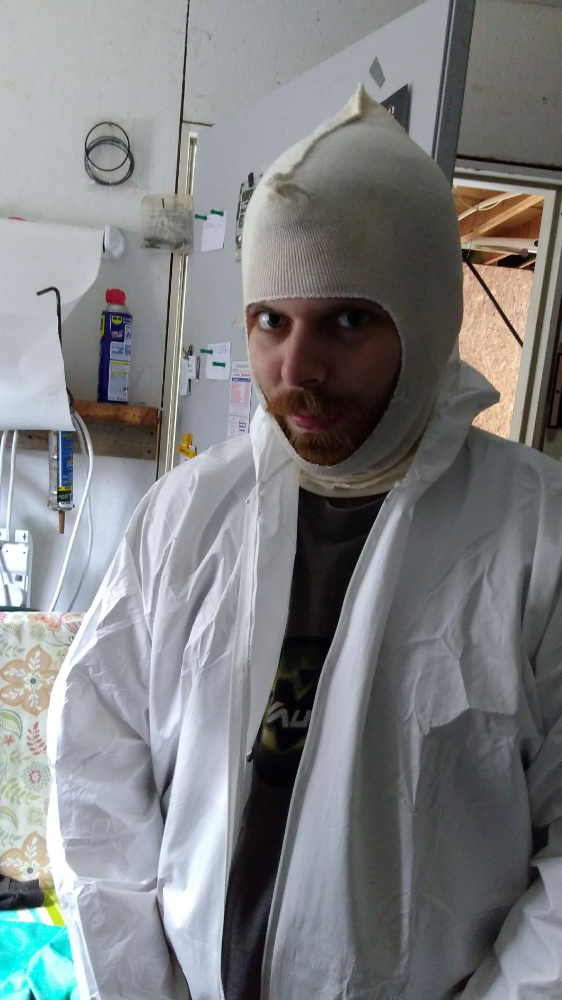
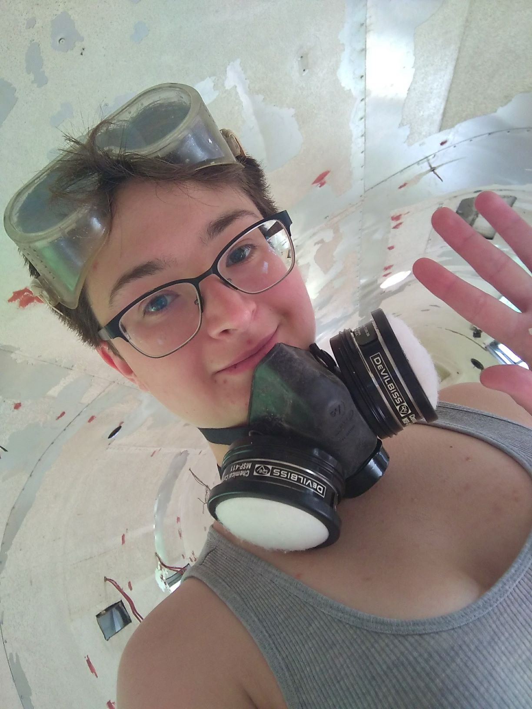

Hi there! We’re Burr and Den, and we decided to live in a camper while Burr was in grad school and Den taught sixth-grade English for a couple of years.
Den
Den has a background in handymanning– electrical work, home building, insulation, and a general good sense of how to Make Things Work. He developed an interest in camper living when he reclaimed a 1966 Avion that had been sitting in a field and was in extremely poor shape. Prior to the camper project, Den built a comfortable apartment inside an extended Ford van while teaching in Oklahoma for Teach for America. He had a lot of experience living small!
Burr
Burr got bit by the tiny house bug after seeing some documentaries on Youtube of other people who’d made it work! Because grad school meant incurring a significant amount of debt, she wanted to cut costs as much as possible – and the biggest cost was housing. The serendipitous camper acquisition meant this was within the realm of possibility. Her employer at the time kindly let her go remote, allowing Burden to tag-team the camper build over the course of 3.5 gorgeous summer months (mid-May through August)!